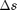
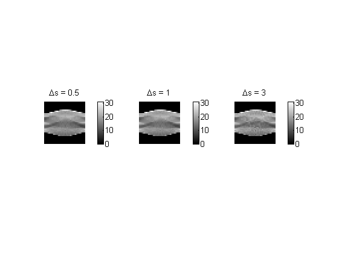
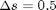
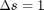
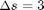
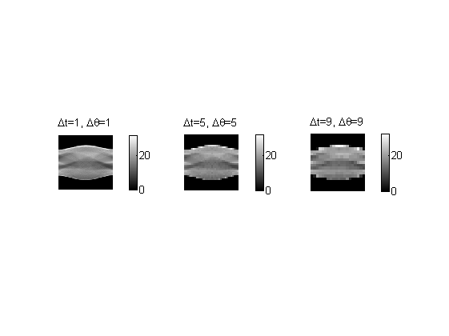
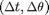
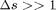
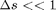

Contents
clear all close all
Q1
tic;
(a) - Line integration
img = phantom(128); % figure; % imshow(img); integral = myIntegration(img,-60,0,1);
Comments about (a):
 was taken to be 1 as this allows for the summation to account for every pixel value in the summation. Larger values of s would lead to very coarse approximations of the integral. Smaller values of s would lead to greater computations. Linear interpolation was used for smoothness of the interpolated values.
(b)
t = [-90:5:90]; theta = [0:5:175]; radon_trans = myRadonTrans(img, t, theta, 1);
(c)
% Radon transform images radon_trans1 = myRadonTrans(img, t, theta, 0.5); % delta_s = 0.5 radon_trans2 = myRadonTrans(img, t, theta, 1); % delta_s = 1 radon_trans3 = myRadonTrans(img, t, theta, 3); % delta_s = 3 max_val = max([max(radon_trans1(:)), max(radon_trans2(:)), max(radon_trans3(:))]); min_val = min([min(radon_trans1(:)), min(radon_trans2(:)), min(radon_trans3(:))]); figure(1); subplot(1,3,1); imshow(radon_trans1, [min_val, max_val]); colorbar title('\Deltas = 0.5'); subplot(1,3,2); imshow(radon_trans2, [min_val, max_val]); colorbar title('\Deltas = 1'); subplot(1,3,3); imshow(radon_trans3, [min_val, max_val]); colorbar title('\Deltas = 3'); % 1D plots ind0 = find(theta==0); ind90 = find(theta==90); figure(2); subplot(2,3,1) plot(t, radon_trans1(:,ind0)); ylabel('Rf(t,0^o)') xlabel('t') title('\Deltas = 0.5, theta = 0^o') subplot(2,3,2) plot(t, radon_trans2(:,ind0)); ylabel('Rf(t,0^o)') xlabel('t') title('\Deltas = 1, theta = 0^o') subplot(2,3,3) plot(t, radon_trans3(:,ind0)); ylabel('Rf(t,0^o)') xlabel('t') title('\Deltas = 3, theta = 0^o') subplot(2,3,4) plot(t, radon_trans1(:,ind90)); ylabel('Rf(t,90^o)') xlabel('t') title('\Deltas = 0.5, theta = 90^o') subplot(2,3,5) plot(t, radon_trans2(:,ind90)); ylabel('Rf(t,90^o)') xlabel('t') title('\Deltas = 1, theta = 90^o') subplot(2,3,6) plot(t, radon_trans3(:,ind90)); ylabel('Rf(t,90^o)') xlabel('t') title('\Deltas = 3, theta = 90^o')

Comments about (c):
The images for  and  are similar, though the latter is expected to be rougher. The image for  is clearly the roughest, due to the coarseness of the approximation with such a large step size.
A similar trend is observed for all the 1D-plots as well. There is no noticeable difference for the plots for and but the plot for is clearly "rougher". This is once again due to the large step size.
(d)
t1 = -90:1:90; t2 = -90:9:90; theta1 = 0:1:179; theta2 = 0:9:171; radon_trans11 = myRadonTrans(img, t1, theta1, 1); radon_trans22 = myRadonTrans(img, t2, theta2, 1); max_val = max([max(radon_trans(:)),max(radon_trans11(:)), max(radon_trans22(:))]); min_val = min([min(radon_trans(:)),min(radon_trans11(:)), min(radon_trans22(:))]); figure(3); subplot(1,3,1); imshow(radon_trans11,[min_val, max_val]); title('\Deltat=1, \Delta\theta=1'); colorbar subplot(1,3,2); imshow(radon_trans,[min_val, max_val]); title('\Deltat=5, \Delta\theta=5'); colorbar subplot(1,3,3); imshow(radon_trans22,[min_val, max_val]); title('\Deltat=9, \Delta\theta=9'); colorbar
Comments about (d):
The images for the various  combinations clearly demonstrate that greater values give much cruder aprpoximations of the Radon transform. In other words, the "quality" of the acquired data is worse for larger . On the other hand, choosing very small values means that the hardware for the CT scanner is more complex as it has to capture data at finer resolutions. Resconstruction of the image would naturally also be more computationally expensive due to the increase in data size. Hence, choosing is a matter of balancing these trade-offs - highly detailed images would require small values and simple hardware and quick reconstruction would require large values.
(e)
The number of pixels in the grid should be chosen on the resolution of the image required. If there is a region of great complexity in the image, one would like to have many pixels to accurately reconstruct the area, thereby requiring high resolution, i.e., more pixels in the grid. should be taken to be around the size of each pixel in the grid. As can be seen from the above experiments, smaller values of do not give appreciable increase in resolution. However, if mandated by the application, smaller values could still be chosen at the expense of greater computational cost.
Choosing  would clearly be a coarse approximation to the actual line integral, so the quality of the image thus obtained would be poor although the computattional cost would be low. On the other hand, choosing  would give much better quality images but the large number of measurements would make it very computatinally expensive. This can be seen from the fact that the matrix A would be very large and hence, each iteration would require more computations.
toc;
Elapsed time is 49.982824 seconds.